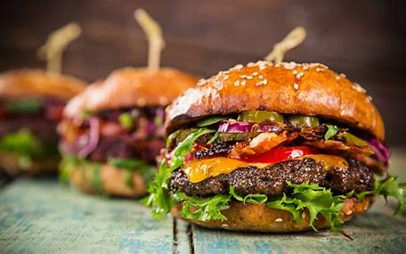
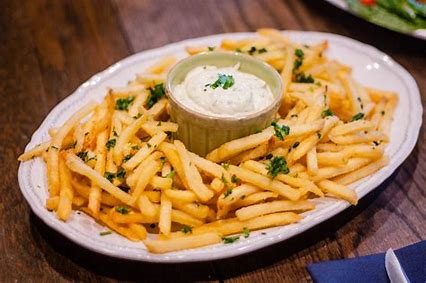

Grill first
Burgers and chicken sandwiches anchor the board, with sides designed to complete the tray.
About the counter
Our mission
McEdgar's started as a small burger idea: keep the menu familiar, make the flavors memorable, and let customers build the tray they actually want.

Burgers and chicken sandwiches anchor the board, with sides designed to complete the tray.
The counter keeps the pace quick while keeping the food colorful, crispy, and properly stacked.
Santa Maria energy shows up in the specials, the service, and the homemade-style desserts.

What we serve
The menu moves from classics to house jokes: crispy cluckers, sweet potato wedges, bold lemonades, kid meals, and shakes with enough personality to count as dessert.
See the menu